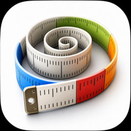

Tap Settings in the app, then tap Remove Ads. This is a one-time purchase — you pay once and ads are gone permanently. No subscription.
Open the App, go to Settings, and tap Restore Purchases. Make sure you are signed in with the same Apple ID you used when you originally purchased Remove Ads. The restore is free and happens instantly.
The App shows ads powered by Google AdMob. Before showing personalised ads, iOS requires us to ask for your permission to use your device’s advertising identifier. If you decline, you will still see ads — just non-personalised ones. If you purchase Remove Ads, no tracking permission is needed and ads are disabled entirely.
You can change your choice at any time in iOS Settings › Privacy & Security › Tracking.
Yes. All body metrics and calculation history are saved entirely on your device. If you have iCloud enabled, this data syncs to your personal iCloud account so your history is available across your Apple devices. We do not have access to your data — it is stored between your device and your own Apple account only.
BMI is calculated using the standard WHO formula (weight in kg divided by height in metres squared). BMR is calculated using the Mifflin-St Jeor equation, which is widely used by healthcare professionals. These are population-level estimates and may not reflect individual differences in body composition. The results are for informational purposes only — consult a healthcare professional for personal health guidance.
BMR (Basal Metabolic Rate) is the number of calories your body needs at rest to maintain basic functions. TDEE (Total Daily Energy Expenditure) is your BMR multiplied by an activity factor, representing the total calories you burn in a day based on your activity level.
Open the App, go to Settings, scroll down to Privacy & Data, and tap Reset History. This permanently removes all saved calculations from your device. If iCloud sync is enabled, the deletion will propagate to your other devices as well.
Yes. All BMI and BMR calculations happen on-device and no internet connection is required. A connection is only needed when making or restoring a purchase, or when iCloud syncs your history in the background.
Yes. Open Settings and change the Measurement System under Units & Display. You can switch between Metric (kg / cm) and Imperial (lb / ft & in) at any time.
Make sure you are signed in to the same Apple ID on both devices and that iCloud is enabled. You can verify this in iOS Settings › your Apple ID › iCloud › Apps using iCloud. Initial sync may take a few minutes after the first launch.